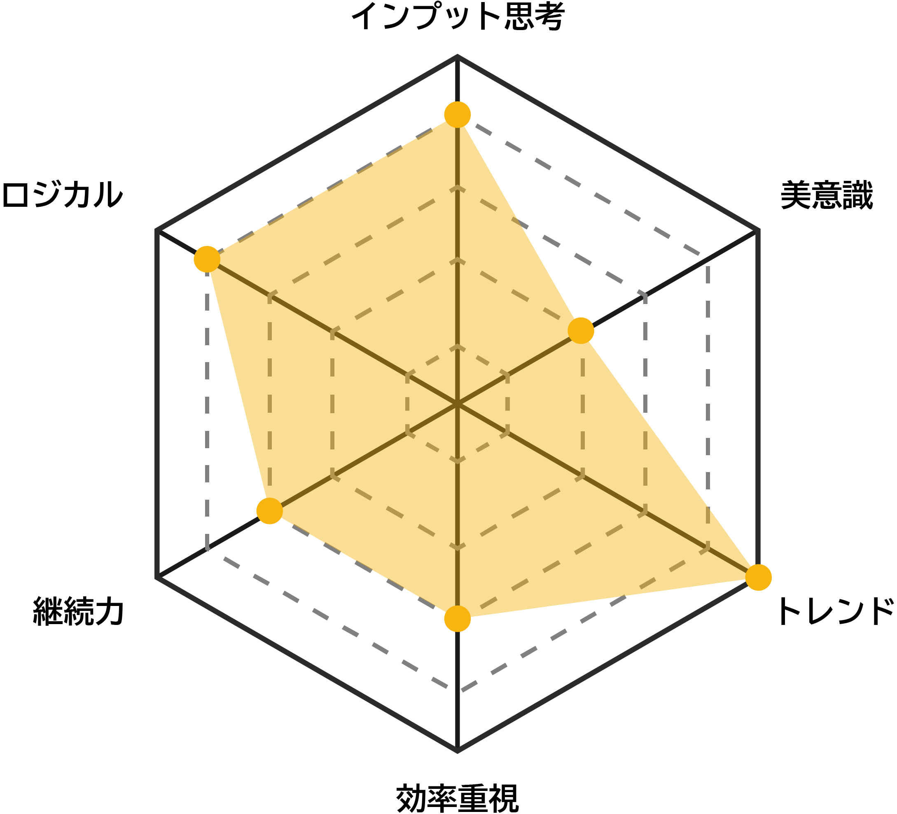
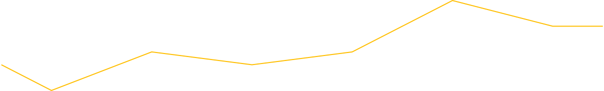

アイデアを作る人のためのメモアプリ
UI/UX制作ツール
制作期間 2024.4 - 7
課題制作 / 1人
Background
初めて作ったUIUXデザイン。ジェームズ・W・ヤングの『アイデアの作り方』の考えをベースに制作しました。アイデアをフェーズに分けて考え、それぞれにアプローチできる機能によって、アイデア出しを手助けするアプリです。
Process
Problem
アイデアが思いつかない！
アイデアは制作の初期段階に位置する最初のステップのひとつ。ここで躓いて時間を費やしてしまうと、その後の制作工程に十分な時間を割けず、制作全体の質に直結する。
そもそもアイデアとは？ひらめきとは？
ジェームズ・W・ヤングの『アイデアの作り方』によると、アイデアは「既存の要素の新しい組み合わせ」。また、アイデア作りを5つのステップに分けている。
アイデアの5ステップ
-
1
インプット
-
2
情報を整理
-
3
無意識にする
-
4
ひらめく
-
5
ブラッシュアップ
Solution
アイデアを作る人のためのメモアプリ
インプット・整理・ひらめき・ブラッシュアップの4つの思考の段階に対し、
「マインドマップ」や「マンダラート」などのテンプレートを用意してサポートする。
-
習慣化できる手軽さがあること
インプットをメモとして習慣的に残すことは、制作の先送りを防ぎ、課題制作やアイデア整理を円滑にする重要な要素。
-
直感的な操作ができること
テキストではなくアイコンで、左脳ではなく右脳で認識するUIUX設計を心がける。
Persona
アイデアに悩む情報系デザイン学科の美大生
田中盛政(19)趣味:ゲーム 睡眠 映像鑑賞
地方から東京の大学近くに一人暮らしし始めたばかり。課題は溜めてしまうタイプで、いつもギリギリで完成する。質の高いプレゼンができないのが悩み。

(To-Be)CJM
- フェーズ
-
- 認知
- 利用
- その後
- 行動
-
- 課題が出る
インプットに敏感に - idasを知り、
利用し始める - 日常のインプットをメモする
- メモをもとに情報を整理・拡張する
- 制作のクオリティがUP↑
- 他の課題や自主制作に利用する
- 課題が出る
- 思考
-
- この課題難しいな...
思いつないや...🫠 - ちょうどいいかも！使ってみよう...😮
- 通学中とか暇なときに軽くメモできるね😀
- この要素を入れてみたらどうなんだろう...?🤔
- 良い出来かも！！😁
- せっかくなら他の課題にも使ってみよう！😄
- この課題難しいな...
- 感情
- 
Transition Diagram
メモする習慣を作るUX
ワークスペースのフローメニューからワークスペースを開くと、真っ先にメモへ遷移する。メモへの抵抗を軽くする目的。
以前の利用で開いていたワークスペースのメモから始まることで、気軽にメモできるフローに。
UI
メニュー
リスト形式のUI
同時並行で複数のワークスペースを利用する可能性もあるため、縦型のリスト形式で表示。
タイトルの文末を「...」で省略
ワークスペースのタイトルが18字を超える場合省略される。
エンプティステート
何もワークスペースが追加されていない状態の時に表示されるUI。
ワークスペース作成ボタン
行動を一押し！大きいボタンが目に止まり、ワークスペースをそのまま作れる設計。
新規ワークスペースを作成
テンプレート追加方式
トグルボタンでアイデア整理・拡張に用いるテンプレートをワークスペース内に追加できる。
あくまでも利用したいテンプレートのみを追加する方式をとることで、ユーザー主導の利用と自由度を重視している。
メモのみ、初めから設定されている状態でスタート
メモはアイデアの種となる要素であるため、あらかじめ選択された状態に。
メモ
操作の目的に応じて上下に役割を分離させている。
ヘッダー
他のテンプレートへワンタップで遷移する機能やワークスペースの編集など全体に関わるものを配置している。
内容編集ボタン
画面下部にはUndoやテキストスタイル編集など、現在使用中のページ内容に直接関わる操作を配置している。
マインドマップ
2種類のエリア拡張ボタン
直感的な操作体験テキスト入力エリア周辺にエリア拡張ボタンを配置することで、思考を広げながらテキスト入力に集中できる。
画面右下にエリア拡張ボタンを配置することで、一呼吸おいて考えるような論理的思考の場面で使用されることを想定
マインドマップの拡張を、テキスト入力エリア周辺と画面右下の二箇所に用意することで、利用スタイルや、ユーザーの思考状態に対応できる設計にしている。
マンダラート
思考の整理と深化
マンダラートは、中心テーマと周辺要素の関係を明確にしながら、思考を段階的に深められる点に特徴がある。
そのため、マインドマップでアイデアを広げた後の整理や、方向性を定めたい中盤以降のUXとして採用している。
オズボーンの
チェックリスト
思考の確認・転換
オズボーンのチェックリストは、発想を広げるのではなく、既存のアイデアに対して異なる切り口を提示するテンプレート。
マインドマップやマンダラート使用後や、行き詰まった際など、後半のUXを想定。